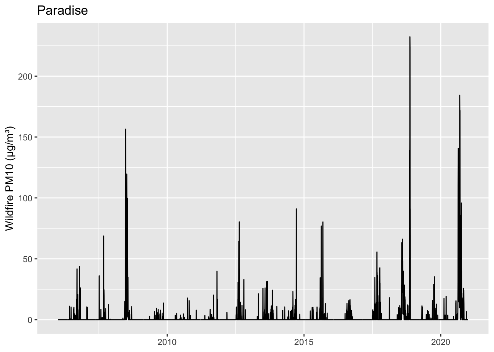

mutate(), or
group_by() already does the job.lapply() and sapply() to run a
function on each element of a vector, list, or data frame.lapply() with
function(x) { }.bind_rows().Submit Week 10 In Class Coding
You often want to run the same code many times with different inputs: the same summary for each site, the same model for each species, the same plot for each year. A good rule of thumb is that if you’ve copied and pasted a piece of code three times, it’s time to iterate instead. Copy-pasting causes problems:
Last week you learned to wrap code in a function so you can reuse it. This week you’ll learn to run that code over and over without retyping it.
This week’s data come from a study of wildfire smoke in California. The authors estimated daily air pollution for every ZIP code in the state from 2006 to 2020 and worked out how much of it came from wildfire smoke. We’ll use a small piece of it: one ZIP code in each of six places.
# data at https://ucd-rdavis.github.io/R-DAVIS/data/ca_wildfire_air.csv
air <- read_csv("data/ca_wildfire_air.csv")## Rows: 32874 Columns: 8
## ── Column specification ──────────────────────────────────────────────
## Delimiter: ","
## chr (1): city
## dbl (6): zip, year, pm10, pm10_fire, ozone, ozone_fire
## date (1): date
##
## ℹ Use `spec()` to retrieve the full column specification for this data.
## ℹ Specify the column types or set `show_col_types = FALSE` to quiet this message.head(air)## # A tibble: 6 × 8
## city zip date year pm10 pm10_fire ozone ozone_fire
## <chr> <dbl> <date> <dbl> <dbl> <dbl> <dbl> <dbl>
## 1 Davis 95616 2006-01-01 2006 7.6 0 34.2 0
## 2 Davis 95616 2006-01-02 2006 11.6 0 21.8 0
## 3 Davis 95616 2006-01-03 2006 14 0 25.4 0
## 4 Davis 95616 2006-01-04 2006 20.8 0 20.1 0
## 5 Davis 95616 2006-01-05 2006 26.5 0 15 0
## 6 Davis 95616 2006-01-06 2006 27.2 0 14.4 0Each row is one place on one day. pm10 is the total
amount of coarse particles in the air (PM10, in µg/m³), and
pm10_fire is the part of it that came from wildfire smoke.
ozone and ozone_fire are the same for ozone,
in parts per billion. On a day with no smoke, the _fire
columns are 0. We’ll call a day with any wildfire PM10
(pm10_fire > 0) a smoke day.
The places include Paradise, which was mostly destroyed by the Camp Fire in November 2018, and Redding and Santa Rosa, which also had major fires in those years. The full column descriptions are in the codebook.
Before writing a loop, check whether R will already repeat the work for you. Many functions are vectorized: give them a vector and they work on every element and return a vector of the same length.
x <- c(1, 10, 100)
log10(x)## [1] 0 1 2Arithmetic is vectorized too, so this computes the non-wildfire PM10 for all 32,874 rows at once, with no loop:
air <- air %>% mutate(pm10_other = pm10 - pm10_fire)And when you want one summary per group, group_by() and
summarise() from week 4 repeat the work for each group:
air %>%
group_by(city) %>%
summarise(smoke_days = sum(pm10_fire > 0))## # A tibble: 6 × 2
## city smoke_days
## <chr> <int>
## 1 Davis 555
## 2 Fresno 450
## 3 Los Angeles 207
## 4 Paradise 637
## 5 Redding 665
## 6 Santa Rosa 269If a vectorized function or group_by() already
does what you want, use it. It’s shorter and faster than
anything you’ll write yourself.
You iterate when the thing you want to repeat doesn’t fit into a column calculation: a whole analysis for each place, a model for each group, a plot for each site, or a file for each year. To start, we’ll repeat the smoke-day count above with each new tool. You already know the right answer, so you can check that each one works.
A for loop runs the same block of code once for each value in a vector:
cities <- unique(air$city)
cities## [1] "Davis" "Fresno" "Los Angeles" "Paradise" "Redding"
## [6] "Santa Rosa"for (this_city in cities) {
print(this_city)
}## [1] "Davis"
## [1] "Fresno"
## [1] "Los Angeles"
## [1] "Paradise"
## [1] "Redding"
## [1] "Santa Rosa"On each pass, this_city takes the next value from
cities, and the code between the braces runs with that
value. You can name it anything. Why not name it city?
Because that’s also a column name. Inside filter(),
city == city compares the column with itself, which is
always TRUE, so you’d get every row back. It’s the same
clash you saw with function arguments last week.
Now let’s do some work inside the loop:
for (this_city in cities) {
city_data <- filter(air, city == this_city)
print(sum(city_data$pm10_fire > 0))
}## [1] 555
## [1] 450
## [1] 207
## [1] 637
## [1] 665
## [1] 269Printing isn’t saving: once the loop finishes, those numbers are gone. To keep them, make an empty object to hold the results before the loop starts, then fill in one spot on each pass:
smoke_days <- numeric(length(cities)) # six zeros, one per city
names(smoke_days) <- cities
for (i in seq_along(cities)) {
city_data <- filter(air, city == cities[i])
smoke_days[i] <- sum(city_data$pm10_fire > 0)
}
smoke_days## Davis Fresno Los Angeles Paradise Redding Santa Rosa
## 555 450 207 637 665 269This time the loop counts positions: seq_along(cities)
gives 1 2 3 4 5 6, and i is the position.
cities[i] is the city at that position, and
smoke_days[i] is where its answer goes. The numbers match
the group_by() version.
Why make the empty vector first? You could start with nothing and add
each answer with c(), but then R copies the whole vector on
every pass. That gets slow with many passes, and it’s easy to get the
order wrong.
lapply(): a for loop in one lineEvery for loop that saves results has the same three parts: make an
empty object, loop, and store each answer. lapply() does
all three for you.
lapply(X, FUN) runs the function FUN on
each element of X and returns a list of
the results, one per element. A data frame is a list of columns, so
lapply() on a data frame works on one column at a time:
pollutants <- air %>% select(pm10, pm10_fire, ozone, ozone_fire)
lapply(pollutants, max)## $pm10
## [1] 282.2
##
## $pm10_fire
## [1] 235.1
##
## $ozone
## [1] 97.8
##
## $ozone_fire
## [1] 48.5sapply() does the same thing but simplifies the
result where it can. Here each answer is a single number, so you get a
named vector:
sapply(pollutants, max)## pm10 pm10_fire ozone ozone_fire
## 282.2 235.1 97.8 48.5Notice that you write max without parentheses. You’re
passing the function itself to sapply(), and
sapply() calls it on each column.
lapply()What if no existing function does exactly what you want? You could write one, as in week 9:
round_mean <- function(x) {
round(mean(x), 1)
}
sapply(pollutants, round_mean)## pm10 pm10_fire ozone ozone_fire
## 23.0 1.7 39.0 0.5But if you only need it here, you don’t have to name it. Write the function right where the name would go:
sapply(pollutants, function(x) round(mean(x), 1))## pm10 pm10_fire ozone ozone_fire
## 23.0 1.7 39.0 0.5Read it like this: “for each column, call it x, and
compute round(mean(x), 1).” The
function(x) ... part is a regular function, just without a
name. People call it an anonymous function.
sapply() passes it each column in turn as
x.
Here’s another. What share of days had any wildfire contribution to each pollutant?
sapply(air %>% select(pm10_fire, ozone_fire), function(x) mean(x > 0))## pm10_fire ozone_fire
## 0.08465657 0.06506662x > 0 gives TRUE/FALSE for
each day, and the mean of TRUE/FALSE is the
share that are TRUE. Smoke added to PM10 on about 8.5% of
days and to ozone on about 6.5%.
The function inside can be as long as you need. Put the body in
braces { }, and the last line is what it returns. You can
also loop over any vector, not just columns. Here’s the smoke-day count
from the for loop, rewritten with sapply():
sapply(cities, function(this_city) {
city_data <- filter(air, city == this_city)
sum(city_data$pm10_fire > 0)
})## Davis Fresno Los Angeles Paradise Redding Santa Rosa
## 555 450 207 637 665 269It’s the same answer as the loop, but without the empty vector,
i, or the line that stores each answer. Because
cities is a character vector, sapply() also
names the results by city.
The argument doesn’t have to be called x. Naming it
this_city makes the function easier to read, and as with
function arguments last week, it keeps the name from clashing with a
column.
Shorthand you’ll see online: since R 4.1,
\(x) is short for function(x).
sapply(pollutants, \(x) round(mean(x), 1)) is exactly the
same as the version above. Use whichever you find easier to read.
For each city, find the year of its worst smoke day: the day with the
highest pm10_fire. Use sapply() with a
function inside it.
Hint: which.max() gives the position of the largest
value in a vector.
sapply(cities, function(this_city) {
city_data <- filter(air, city == this_city)
city_data$year[which.max(city_data$pm10_fire)]
})## Davis Fresno Los Angeles Paradise Redding Santa Rosa
## 2018 2020 2007 2018 2020 2018lapply() +
bind_rows()When each answer is more than one number, ask your function to return
a small data frame. lapply() gives you a list of them, and
bind_rows() stacks them into one table. Here’s the worst
smoke day in each city, with its date and both fire columns:
worst_days <- lapply(cities, function(this_city) {
city_data <- filter(air, city == this_city)
worst <- which.max(city_data$pm10_fire)
tibble(city = this_city,
date = city_data$date[worst],
pm10_fire = city_data$pm10_fire[worst],
ozone_fire = city_data$ozone_fire[worst])
})
worst_days[[1]] # the first element of the list: a one-row tibble## # A tibble: 1 × 4
## city date pm10_fire ozone_fire
## <chr> <date> <dbl> <dbl>
## 1 Davis 2018-11-15 235. 0bind_rows(worst_days)## # A tibble: 6 × 4
## city date pm10_fire ozone_fire
## <chr> <date> <dbl> <dbl>
## 1 Davis 2018-11-15 235. 0
## 2 Fresno 2020-09-08 221. 6.1
## 3 Los Angeles 2007-10-23 105. 0
## 4 Paradise 2018-11-15 232. 6
## 5 Redding 2020-09-09 132. 0
## 6 Santa Rosa 2018-11-09 145. 0Paradise, Davis, and Santa Rosa all had their worst day during the Camp Fire in November 2018. Redding and Fresno had theirs in September 2020, during that year’s record fire season, and Los Angeles in October 2007, when fires burned across Southern California.
This list of data frames → bind_rows()
pattern is one of the most useful in this lesson. It works for anything
you can do for one case and return as a table.
That includes functions you wrote yourself. Following week 9, write a function that works for one place and check it on a case you can verify:
smoke_summary <- function(data, place) {
place_data <- filter(data, city == place)
tibble(city = place,
smoke_days = sum(place_data$pm10_fire > 0),
fire_pct = round(100 * sum(place_data$pm10_fire) / sum(place_data$pm10), 1))
}
smoke_summary(air, "Paradise")## # A tibble: 1 × 3
## city smoke_days fire_pct
## <chr> <int> <dbl>
## 1 Paradise 637 12.2fire_pct is the percent of all the PM10 in that place
over the 15 years that came from wildfire smoke. Paradise’s 637 smoke
days match our earlier count, so the function works. Now run it for
every place:
lapply(cities, function(this_city) smoke_summary(air, this_city)) %>%
bind_rows()## # A tibble: 6 × 3
## city smoke_days fire_pct
## <chr> <int> <dbl>
## 1 Davis 555 10
## 2 Fresno 450 5.6
## 3 Los Angeles 207 1.7
## 4 Paradise 637 12.2
## 5 Redding 665 16.5
## 6 Santa Rosa 269 6.2Here the anonymous function is a small adapter. lapply()
gives it one city at a time, and it passes that city on to
smoke_summary() along with the data. This is the
full recipe: get it working once, turn it into a function, then
iterate.
So far each function has started by filtering the data down to one
city. split() does that for every city at once and returns
a named list with one data frame per city:
by_city <- split(air, air$city)
names(by_city)## [1] "Davis" "Fresno" "Los Angeles" "Paradise" "Redding"
## [6] "Santa Rosa"sapply(by_city, nrow)## Davis Fresno Los Angeles Paradise Redding Santa Rosa
## 5479 5479 5479 5479 5479 5479Now each element is already one city’s data, so the function inside
only needs a data frame. This is where iteration does something
group_by() can’t easily do: fit a model to each city. Are
smoke days becoming more common? For each city, count smoke days per
year, fit a straight line through them with lm(), and keep
its slope (the change in smoke days per year):
sapply(by_city, function(city_data) {
per_year <- city_data %>%
group_by(year) %>%
summarise(smoke_days = sum(pm10_fire > 0))
fit <- lm(smoke_days ~ year, data = per_year)
coef(fit)[["year"]]
})## Davis Fresno Los Angeles Paradise Redding Santa Rosa
## 2.996429 3.153571 1.028571 3.435714 2.742857 2.557143The slope is positive everywhere: the fitted line rises by about 2.5 to 3.5 smoke days per year in five of the places, and by about 1 per year in Los Angeles. That’s a rough fit, because a few big years (2008, 2017, 2018, 2020) pull it up a lot. Still, the code to answer the question is one short function, run six times.
The same pattern makes one plot per place. lapply()
returns a list of ggplots, and you pick out the one you want by
name:
smoke_plots <- lapply(by_city, function(city_data) {
ggplot(city_data, aes(x = date, y = pm10_fire)) +
geom_line() +
labs(title = city_data$city[1], x = NULL, y = "Wildfire PM10 (µg/m³)")
})
smoke_plots$Paradise
To save each one to a file, a plain for loop works fine. You want the files, not a list of results, so there’s nothing to collect:
for (this_city in names(smoke_plots)) {
ggsave(paste0("figures/smoke_", this_city, ".png"), smoke_plots[[this_city]])
}The full version of this dataset comes as one file per year. Reading
a folder of files is one of the most common reasons to iterate, and it’s
the same lapply() + bind_rows() pattern:
files <- list.files("data/air_by_year", full.names = TRUE) # every file in the folder
all_years <- lapply(files, read_csv) %>% bind_rows()| You want to… | Use |
|---|---|
| Calculate a new column from other columns | a vectorized function in mutate() |
| One summary per group | group_by() + summarise() |
| One value per element (column, city, file) | sapply() |
| Anything else per element (a table, a model, a plot) | lapply(), then bind_rows() if the pieces
are tables |
| Do something for its side effect (print, save files), or each step needs the previous one | a for loop |
You may have heard that loops are slow in R. A loop that saves into
an empty object made beforehand is about as fast as
lapply(). Choose whichever makes your code clearest.
If sapply() surprises you:
sapply() guesses the shape of the result. If each answer is
a single number you get a vector. If each answer has the same few
numbers you get a matrix, and otherwise you get a list. It also drops
some classes, such as dates. If the output looks odd, switch to
lapply() and look at the list it returns.
purrr: the tidyverse version of the
apply family. map() works like lapply(), and
map_dbl() is like sapply() except that it
always returns numbers (or gives an error), so it never guesses. If
you’re comfortable with lapply(), you can already read
purrr code. Jenny Bryan’s
tutorial is a good next step.apply(): runs a function over the rows
or columns of a matrix. If you give it a data frame, it turns
it into a matrix first. A matrix can hold only one type, so a single
text column turns every column into text. For data frames, use
sapply() over the columns instead.mapply() / Map(): iterate
over two vectors in parallel, such as a vector of file names and a
vector of sites.Data: Aguilera, R. & Benmarhnia, T., Daily Total and Wildfire Concentrations of PM10 and Ozone for California ZIP Codes (2006-2020), Harvard Dataverse (CC0), described in Aguilera et al. (2025), Effects of multiple wildfire smoke pollutants (PM2.5, PM10 and ozone) on respiratory and cardiovascular hospitalizations in California (2006-2019), GeoHealth 9(12), e2025GH001510.
This lesson builds on an earlier version by Michael Culshaw-Maurer, with ideas from Mike Koontz and Brandon Hurr’s D-RUG presentation.